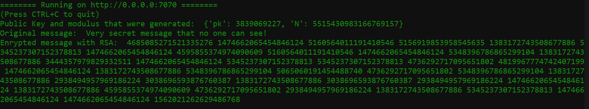
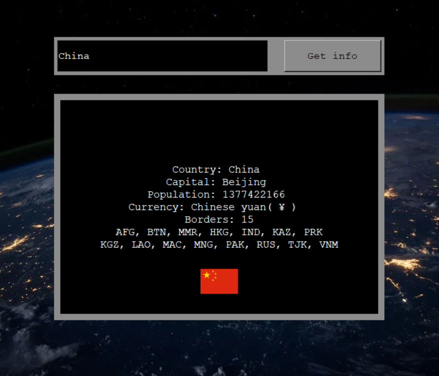

Auth-Schemes
Authentication-Schemes is my most recent project that is example how to implement OAuth 2.0 and OpenID Connect in user authentication when designing web-app.
I have created my own authentication server and then I have also included Keycloak authentication server. These uses two different flows: Authorization code flow
and implict flow. You can read more about the flows and diffrences between them from here.
Project contains also Class based view, and OOP - structuring. I have also implemented importlib that takes CLI - argument and that way import correct
libraries, which increases runtime-speed and all effectiveness since not all unnecessary libraries are imported every time code is run.
One of my main goal was also to write good and understandable documentation and keep track all recources and guides etc, that I used while developing Authentication-Schemes- project.
Link to the GitHub-page!
RSA-Encryption

This project is to show how to use RSA encryption to encrypt messages, how to randomly generate keypairs (Public key, Private key)
and how to use JWT to send data over HTTP-requests in Python3.
There is Client 1 and Client 2 in this project. Client 1 is the person who wants encrypted messages and generates the keys. Client 2 is the one who receives
public key and encrypts message with it and then sends it to Client 1 through HTTP-request.
My main goal in this project was to show as simple as possible how RSA is executed and how to use it to generate encrypted communication. My aim was also to show basics of
creating AIOHTTP servers and how to use JWT as a standard method to send data over HTTP-requests.
Link to the GitHub-page!
InfoWorld


This is my first GUI project, which goal is to show basics of tkinter (which is python-library that is used when simple GUI's are needed), how to use two different
REST API's when developing application and how to gain data from them. InfoWorld gathers data from two different API's (the country information is from one API and the flag is from another).
This is not fancy application but contains many good fundamental pilars about coding in Python 3 and using REST API's.
I have also created Django web application of the InfoWorld and it's called InfoWorldv2. It is published in heroku and you can test it out whenever you like!
Link to the InfoWorldv2 GitHub-page!
Link to the original InfoWorld GitHub-page!